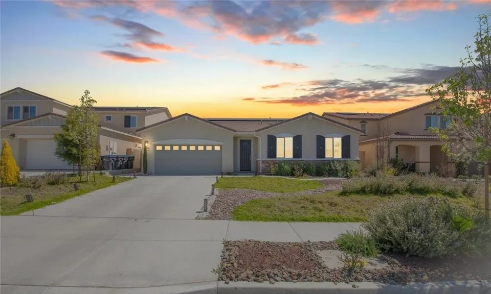
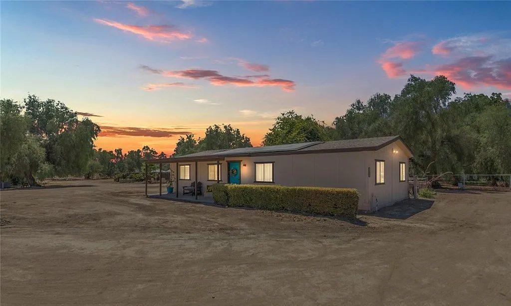
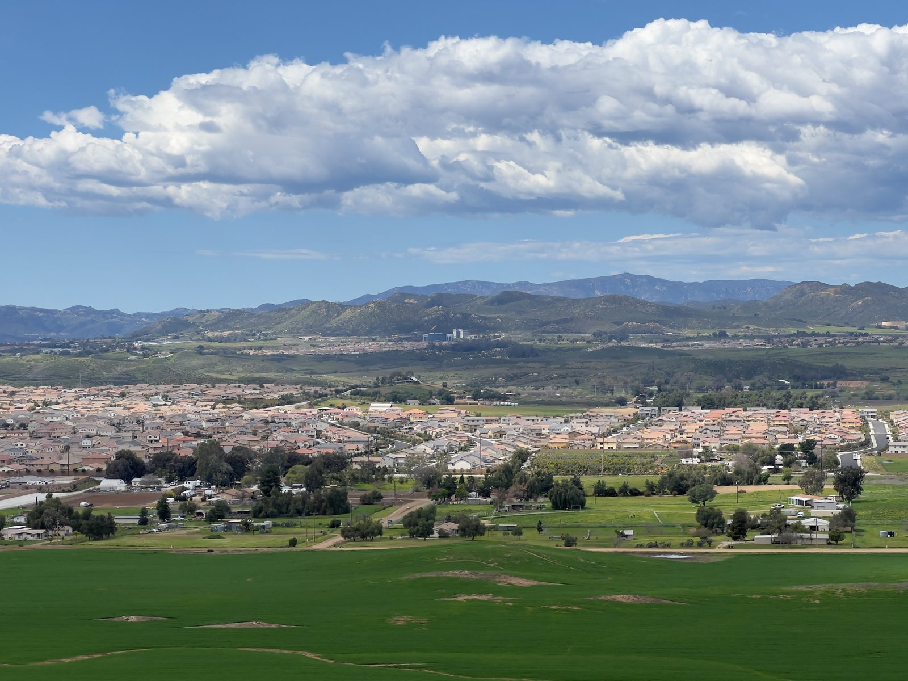
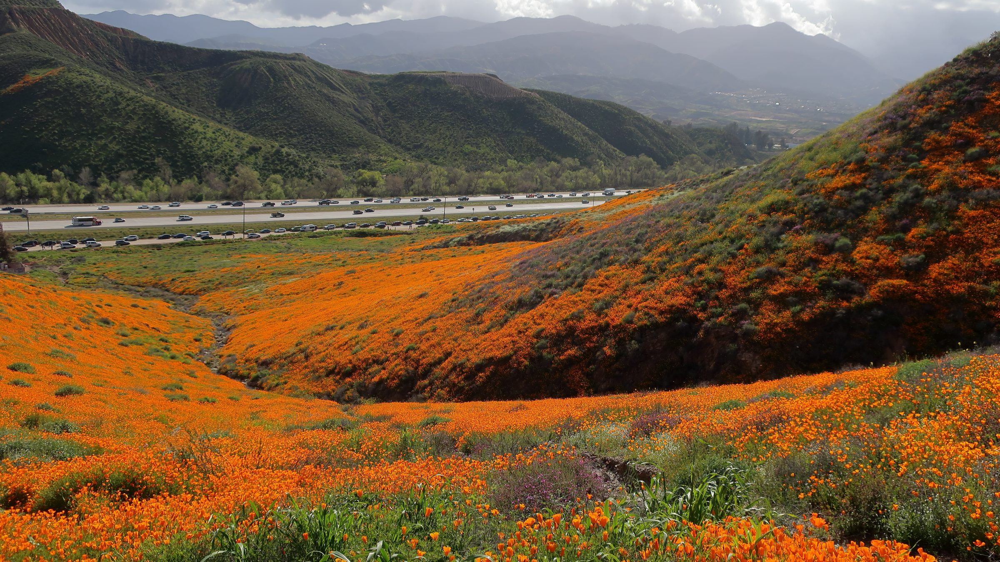

01

Winchester, Riverside County
Homes in Winchester and neighboring French Valley, both unincorporated, with saved searches and what Jim checks before you make an offer.
Winchester at a glance
Winchester is not a city. It is an unincorporated community in southwestern Riverside County, so the County handles its planning, zoning and building permits. Its small commercial center sits where Winchester Road, State Route 79, meets Simpson Road, between Menifee and Hemet.
The County's area plan describes small homes on large parcels and farmland around a Western-themed core, with Double Butte to the north, Salt Creek to the south and Diamond Valley Lake to the southeast. South along the same highway, toward Temecula, is French Valley, an unincorporated community of its own.
Saved searches
Each card opens a live search of MLS listings, updated as they change.

01

02

03

04
<!-- IDX_ZONE: homes-for-sale-winchester-ca-feed -->
The newest Winchester listings in one compact row, six to eight homes. Builder places the Showcase hotsheet shortcode here in its compact layout.
The valley was first called Pleasant Valley. Surveyor T.M. Parsons drew a town site to be called Winchester in 1887, lots went on sale when the map was filed on January 3, 1888, and that May the Perris and San Jacinto branch railroad opened through town. In 1889 more than 200,000 sacks of grain were shipped from Winchester, which took its name from Amy Winchester.
Swiss ranchers Angelo Domenigoni and Gaudenzio Garboni began ranching south of town. The rail line is unused now, but the old street grid survives downtown, and the County's area plan pictures a walkable, Western-themed town center around Winchester and Simpson roads.
Southeast of town, the Metropolitan Water District built Diamond Valley Lake in the late 1990s, after weighing 13 sites over four years. The reservoir fills the hourglass-shaped Diamond and Domenigoni valleys, 4.5 miles long and 2 miles wide, and holds up to 810,000 acre-feet of water.
Metropolitan allows boating, fishing, kayaking, canoeing and sailing, but no swimming or other body contact with the water, and trails through the surrounding hills are open to hikers, cyclists and riders. The County's area plan sees Winchester as the gateway to Diamond Valley.
About 14,000 acres of open space, the Southwestern Riverside County Multi-Species Reserve, surround Diamond Valley Lake and connect it with Lake Skinner, with more than 30 miles of trails for hiking, biking and riding. The reserve's interpretive center is in the Alamos Schoolhouse at Lake Skinner.
Metropolitan finished Lake Skinner in 1973. Riverside County runs the Lake Skinner Recreation Area around it, in the hills of Winchester, with camping, picnic areas, trails, sailing and fishing; boating there is non-body contact too.
French Valley runs north and south between Winchester and Temecula along Winchester Road, and Warm Springs, Tucalota and Santa Gertrudis creeks cross it. It is unincorporated as well, and the Board of Supervisors' records treat it as a community of its own. The County's Southwest Area Plan puts much of the area's future growth here, northeast of Temecula and Murrieta, in specific plans focused on State Route 79.
The County-owned French Valley Airport, a 261-acre general aviation field with a single north-south runway, sits beside Winchester Road, and the County limits density, building height and noise in the zones around it. Temecula Valley Unified runs French Valley Elementary and other schools with Winchester addresses.

Day to day
School information is factual and by district. Always confirm a specific address in the district's school finder.
Questions
No. Winchester is an unincorporated community in Riverside County, so the County handles planning, zoning and permits. Most of its land use policy is in the County's Harvest Valley/Winchester Area Plan.
French Valley is the unincorporated community along Winchester Road between Winchester and Temecula, northeast of Murrieta. The County-owned French Valley Airport is there, and the County's Southwest Area Plan covers it.
It depends on the address. The County lists Hemet Unified and Menifee Union schools in the Winchester area, and Temecula Valley Unified runs French Valley Elementary and other schools with Winchester addresses. Check a specific address with the district.
By road from Winchester Road and Simpson Road, Old Town Temecula is about 17 miles and downtown Riverside about 30. Menifee City Hall is about 7 miles west and Hemet about 9 miles east.
Nearby



Resources
Contact
Jim has sold homes in Winchester. Tell him whether you are looking near the town or in French Valley, and he will tell you what the County's rules mean for the lot you like.